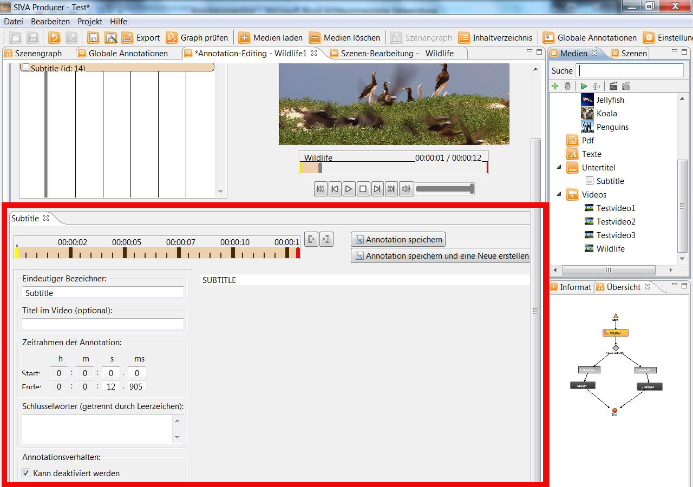

For a subtitle-annotation you can define the starting- and ending point. Moreover you can give the annotation a name.  When the project is ready it looks like this: For further details see: "Create annotations"